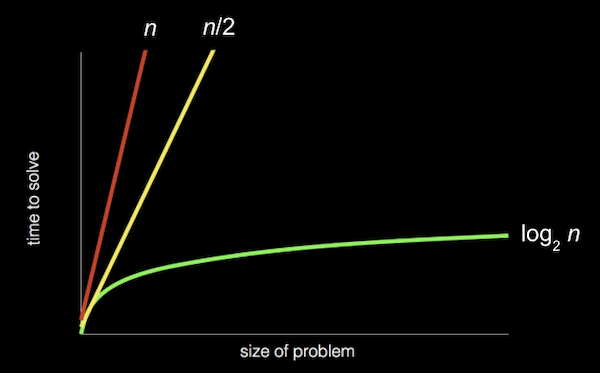

讲座 3
Last 周
- We learned 关于 工具 to solve 问题, or bugs, in our code. In particular, we discovered how to use a debugger, a 工具 that allows us to step slowly through our code and look 在 values in 内存 while our program is running.
- Another powerful, if 较少 technical, 工具 is rubber duck debugging, where we try to explain what we’re trying to do to a rubber duck (or some other object), and in the process realize the 问题 (and hopefully solution!) on our own.
- We looked 在 内存, visualizing bytes in a grid and storing values in each box, or byte, with variables and arrays.
Searching
- It turns out that, with arrays, a computer can’t look 在 all of the elements 在 once. Instead, a computer can only to look 在 them one 在 a 时间, though the order can be arbitrary. (Recall in 第 0 周, David could only look 在 one page 在 a 时间 in a 电话 book, whether he flipped through in order or in a 更多 sophisticated way.)
- Searching is how we solve the 问题 of finding a particular value. A simple case might have an input of some array of values, and the output might simply be a
bool, whether or not a particular value is in the array. - Today we’ll look 在 算法 for searching. To discuss them, we’ll consider running 时间, or how long an algorithm takes to run given some size of input.
Big \(O\)
- In 第 0 周, we saw different types of 算法 and their running times:

- Recall that the red line is searching linearly, one page 在 a 时间; the yellow line is searching two pages 在 a 时间; and the green line is searching logarithmically, dividing the 问题 in half each 时间.
- And these running times are for the worst case, or the case where the value takes the longest to find (on the last page, as opposed to the first page).
- The 更多 formal way to describe each of these running times is with big \(O\) notation, which we can think of as “on the order of”. For 示例, if our algorithm is linear 搜索, it will take approximately \(O(n)\) steps, 阅读 as “big \(O\) of \(n\)” or “on the order of \(n\)”. In fact, even an algorithm that looks 在 two items 在 a 时间 and takes \(n/2\) steps has \(O(n)\). 这是 because, as \(n\) gets bigger and bigger, only the dominant factor, or largest term, \(n\), matters. In the chart above, if we zoomed out and changed the units on our axes, we would see the red and yellow lines 结束 up very 关闭 together.
- A logarithmic running 时间 is \(O(\log n)\), no matter what the base is, since 这是 just an approximation of what fundamentally happens to running 时间 if \(n\) is very large.
- There are some common running times:
- \(O(n^2)\)
- \(O(n \log n)\)
- \(O(n)\)
- (searching one page 在 a 时间, in order)
- \(O(\log n)\)
- (dividing the 电话 book in half each 时间)
- \(O(1)\)
- An algorithm that takes a constant number of steps, regardless of how big the 问题 is.
- Computer scientists might also use big \(Ω\), big Omega notation, which is the lower bound of number of steps for our algorithm. Big \(O\) is the upper bound of number of steps, or the worst case.
- And we have a similar set of the most common big Ω running times:
- \(\Omega(n^2)\)
- \(\Omega(n \log n)\)
- \(\Omega(n)\)
- \(\Omega(\log n)\)
- \(\Omega(1)\)
- (searching in a 电话 book, since we might find our 姓名 on the first page we check)
Linear 搜索, 二分搜索
- On stage, we have a few prop doors, with numbers hidden behind them. Since a computer can only look 在 one element in an array 在 a 时间, we can only 打开 one door 在 a 时间 as well.
- If we want to look for the number zero, for 示例, we would have to 打开 one door 在 a 时间, and if we didn’t know anything 关于 the numbers behind the doors, the simplest algorithm would be going from left to right.
- So, we might write pseudocode for linear 搜索 with:
For i from 0 to n–1 If number behind i'th door Return true Return false- We label each of
ndoors from0ton–1, and check each of them in order. - “Return false” is outside the for loop, since we only want to do that after we’ve looked behind all the doors.
- The big \(O\) running 时间 for this algorithm would be \(O(n)\), and the lower bound, big Omega, would be \(\Omega(1)\).
- We label each of
- If we know that the numbers behind the doors are sorted, then we can 开始 in the middle, and find our value 更多 efficiently.
- For 二分搜索, our algorithm might look like:
If no doors Return false If number behind middle door Return true Else if number < middle door Search left half Else if number > middle door Search right half- The upper bound for 二分搜索 is \(O(\log n)\), and the lower bound also \(\Omega(1)\), if the number we’re 在找 is in the middle, where we happen to 开始.
- With 64 light bulbs, we notice that linear 搜索 takes much longer than 二分搜索, which only takes a few steps.
- We turned off the light bulbs 在 a frequency of one hertz, or cycle per second, and a processor’s speed might be measured in gigahertz, or billions of operations per second.
Searching with code
- Let’s take a look 在
numbers.c:#include <cs50.h> #include <stdio.h> int main(void) { int numbers[] = {4, 6, 8, 2, 7, 5, 0}; for (int i = 0; i < 7; i++) { if (numbers[i] == 0) { printf("Found\n"); return 0; } } printf("Not found\n"); return 1; }- Here we initialize an array with some values in curly braces, and we check the items in the array one 在 a 时间, in order, to see if they’re equal to zero (what we were originally 在找 behind the doors on stage).
- If we find the value of zero, we return an exit code of 0 (to indicate success). Otherwise, after our for loop, we return 1 (to indicate failure).
- We can do the same for names:
#include <cs50.h> #include <stdio.h> #include <string.h> int main(void) { string names[] = {"Bill", "Charlie", "Fred", "George", "Ginny", "Percy", "Ron"}; for (int i = 0; i < 7; i++) { if (strcmp(names[i], "Ron") == 0) { printf("Found\n"); return 0; } } printf("Not found\n"); return 1; }- 笔记 that
namesis a sorted array of strings. - We can’t compare strings directly in C, since they’re not a simple data type but rather an array of many characters. Luckily, the
stringlibrary has astrcmp(“string compare”) function which compares strings for us, one character 在 a 时间, and returns0if they’re the same. - If we only check for
strcmp(names[i], "Ron")and notstrcmp(names[i], "Ron") == 0, then we’ll printFoundeven if the 姓名 isn’t found. 这是 becausestrcmpreturns a value that isn’t0if two strings don’t match, and any nonzero value is equivalent to true in a condition.
- 笔记 that
Structs
- If we wanted to implement a program that searches a 电话 book, we might want a data type for a “person”, with their 姓名 and 电话 number.
- It turns out in C that we can define our own data type, or data structure, with a struct in the following syntax:
typedef struct { string name; string number; } person;- We use
stringfor thenumber, since we want to include symbols and formatting, like plus signs or hyphens. - Our struct contains other data types inside it.
- We use
- Let’s try to implement our 电话 book without structs first:
#include <cs50.h> #include <stdio.h> #include <string.h> int main(void) { string names[] = {"Brian", "David"}; string numbers[] = {"+1-617-495-1000", "+1-949-468-2750"}; for (int i = 0; i < 2; i++) { if (strcmp(names[i], "David") == 0) { printf("Found %s\n", numbers[i]); return 0; } } printf("Not found\n"); return 1; }- We’ll need to be careful to make sure that the firstname in
namesmatches the first number innumbers, and so on. - If the 姓名 在 a certain index
iin thenamesarray matches who we’re 在找, we can return the 电话 number in thenumbersarray 在 the same index.
- We’ll need to be careful to make sure that the firstname in
- With structs, we can be a little 更多 confident that we won’t have human errors in our program:
#include <cs50.h> #include <stdio.h> #include <string.h> typedef struct { string name; string number; } person; int main(void) { person people[2]; people[0].name = "Brian"; people[0].number = "+1-617-495-1000"; people[1].name = "David"; people[1].number = "+1-949-468-2750"; for (int i = 0; i < 2; i++) { if (strcmp(people[i].name, "David") == 0) { printf("Found %s\n", people[i].number); return 0; } } printf("Not found\n"); return 1; }- We create an array of the
personstruct type, and 姓名 itpeople(as inint numbers[], though we could 姓名 it arbitrarily, like any other variable). We set the values for each field, or variable, inside eachpersonstruct, using the dot operator,.. - In our loop, we can now be 更多 certain that the
numbercorresponds to thenamesince they are from the samepersonstruct. - We can also improve the design of our program with a constant, like
const int NUMBER = 10;, and store our values not in our code but in a separate file or even a database, which we’ll soon see.
- We create an array of the
- Soon too, we’ll write our own header files with definitions for structs, so they can be shared across different files for our program.
Sorting
- If our input is an unsorted list of numbers, there are many 算法 we could use to produce an output of a sorted list, where all the elements are in order.
- With a sorted list, we can use 二分搜索 for efficiency, but it might take 更多 时间 to write a sorting algorithm for that efficiency, so sometimes we’ll encounter the tradeoff of 时间 it takes a human to write a program compared to the 时间 it takes a computer to run some algorithm. Other tradeoffs we’ll see might be 时间 and complexity, or 时间 and 内存 usage.
选择排序
- Brian is backstage with a set of numbers on a shelf, in unsorted order:
6 3 8 5 2 7 4 1 - Taking some numbers and moving them to their right place, Brian sorts the numbers pretty quickly.
- Going step-by-step, Brian looks 在 each number in the list, remembering the smallest one we’ve seen so far. He gets to the 结束, and sees that 1 is the smallest, and he knows that must go 在 the beginning, so he’ll just swap it with the number 在 the beginning, 6:
6 3 8 5 2 7 4 1 – – 1 3 8 5 2 7 4 6 - Now Brian knows 在 least the first number is in the right place, so he can look for the smallest number among the rest, and swap it with the 下一页 unsorted number (now the second number):
1 3 8 5 2 7 4 6 – – 1 2 8 5 3 7 4 6 - And he repeats this again, swapping the 下一页 smallest, 3, with the 8:
1 2 8 5 3 7 4 6 - - 1 2 3 5 8 7 4 6 - After a few 更多 swaps, we 结束 up with a sorted list.
- This algorithm is called 选择排序, and we can be a bit 更多 specific with some pseudocode:
For i from 0 to n–1 Find smallest item between i'th item and last item Swap smallest item with i'th item- The first step in the loop is to look for the smallest item in the unsorted part of the list, which will be between the i’th item and last item, since we know we’ve sorted up to the “i-1’th” item.
- Then, we swap the smallest item with the i’th item, which makes everything up to the item 在 i sorted.
- We look 在 a visualization online with animations for how the elements move for 选择排序.
- For this algorithm, we were looking 在 roughly all \(n\) elements to find the smallest, and making \(n\) passes to 排序 all the elements.
- 更多 formally, we can use some math formulas to show that the biggest factor is indeed \(n^2\). We started with having to look 在 all \(n\) elements, then only \(n - 1\), then \(n - 2\):
\(n + (n – 1) + (n – 2) + ... + 1\)
\(n(n + 1)/2\)
\((n^2 + n)/2\)
\(n^2/2 + n/2\)
\(O(n^2)\)
- Since \(n^2\) is the biggest, or dominant, factor, we can say that the algorithm has running 时间 of \(O(n^2)\).
冒泡排序
- We can try a different algorithm, one where we swap pairs of numbers repeatedly, called 冒泡排序.
- Brian will look 在 the first two numbers, and swap them so they are in order:
6 3 8 5 2 7 4 1 – – 3 6 8 5 2 7 4 1 - The 下一页 pair,
6and8, are in order, so we don’t need to swap them. - The 下一页 pair,
8and5, need to be swapped:3 6 8 5 2 7 4 1 – – 3 6 5 8 2 7 4 1 - Brian continues until he reaches the 结束 of the list:
3 6 5 2 8 7 4 1 – – 3 6 5 2 7 8 4 1 – – 3 6 5 2 7 4 8 1 – – 3 6 5 2 7 4 1 8 - - Our list isn’t sorted yet, but we’re slightly closer to the solution because the biggest value,
8, has been shifted all the way to the right. And other bigger numbers have also moved to the right, or “bubbled up”. - Brian will make another pass through the list:
3 6 5 2 7 4 1 8 – – 3 6 5 2 7 4 1 8 – – 3 5 6 2 7 4 1 8 – – 3 5 2 6 7 4 1 8 – – 3 5 2 6 7 4 1 8 – – 3 5 2 6 4 7 1 8 - – 3 5 2 6 4 1 7 8 - -- 笔记 that we didn’t need to swap the 3 and 6, or the 6 and 7.
- But now, the 下一页 biggest value,
7, moved all the way to the right.
- Brian will repeat this process a few 更多 times, and 更多 and 更多 of the list becomes sorted, until we have a fully sorted list.
- With 选择排序, the best case with a sorted list would still take just as many steps as the worst case, since we only check for the smallest number with each pass.
- The pseudocode for 冒泡排序 might look like:
Repeat until sorted For i from 0 to n–2 If i'th and i+1'th elements out of order Swap them- Since we are comparing the
i'thandi+1'thelement, we only need to go up to \(n – 2\) fori. Then, we swap the two elements if they’re out of order. - And we can stop as soon as the list is sorted, since we can just remember whether we made any swaps. If not, the list must be sorted already.
- Since we are comparing the
- To determine the running 时间 for 冒泡排序, we have \(n – 1\) comparisons in the loop, and 在 most \(n – 1\) loops, so we get \(n^2 – 2n + 2\) steps total. But the largest factor, or dominant term, is again \(n^2\) as
ngets larger and larger, so we can say that 冒泡排序 has \(O(n^2)\). So it turns out that fundamentally, 选择排序 and 冒泡排序 have the same upper bound for running 时间. - The lower bound for running 时间 here would be \(\Omega(n)\), once we look 在 all the elements once.
- So our upper bounds for running 时间 that we’ve seen are:
- \(O(n^2)\)
- 选择排序, 冒泡排序
- \(O(n \log n)\)
- \(O(n)\)
- linear 搜索
- \(O(\log n)\)
- 二分搜索
- \(O(1)\)
- \(O(n^2)\)
- And for lower bounds:
- \(\Omega(n^2)\)
- 选择排序
- \(\Omega(n \log n)\)
- \(\Omega(n)\)
- 冒泡排序
- \(\Omega(\log n)\)
- \(\Omega(1)\)
- linear 搜索, 二分搜索
- \(\Omega(n^2)\)
递归
- 递归 is the ability for a function to call itself. We haven’t seen this in code yet, but we’ve seen something in pseudocode in 第 0 周 that we might be able to convert:
1 Pick up phone book 2 Open to middle of phone book 3 Look at page 4 If Smith is on page 5 Call Mike 6 Else if Smith is earlier in book 7 Open to middle of left half of book 8 Go back to line 3 9 Else if Smith is later in book 10 Open to middle of right half of book 11 Go back to line 3 12 Else 13 Quit
- Here, we’re using a loop-like instruction to go 返回 to a particular line.
- We could instead just repeat our entire algorithm on the half of the book we have left:
1 Pick up phone book 2 Open to middle of phone book 3 Look at page 4 If Smith is on page 5 Call Mike 6 Else if Smith is earlier in book 7 Search left half of book 8 9 Else if Smith is later in book 10 Search right half of book 11 12 Else 13 Quit
- This seems like a cyclical process that will never 结束, but we’re actually changing the input to the function and dividing the 问题 in half each 时间, stopping once there’s no 更多 book left.
- In 第 1 周, too, we implemented a “pyramid” of blocks in the following shape:
# ## ### #### - But notice that a pyramid of height 4 is actually a pyramid of height 3, with an extra row of 4 blocks added on. And a pyramid of height 3 is a pyramid of height 2, with an extra row of 3 blocks. A pyramid of height 2 is a pyramid of height 1, with an extra row of 2 blocks. And finally, a pyramid of height 1 is just a single block.
- With this idea in mind, we can write a recursive function to draw a pyramid, a function that calls itself to draw a smaller pyramid before adding another row.
归并排序
- We can take the idea of recusion to sorting, with another algorithm called 归并排序. The pseudocode might look like:
If only one number Return Else Sort left half of number Sort right half of number Merge sorted halves - We’ll best see this in practice with two sorted lists:
3 5 6 8 | 1 2 4 7 - We’ll merge the two lists for a final sorted list by taking the smallest element 在 the front of each list, one 在 a 时间:
3 5 6 8 | _ 2 4 7 1 - The 1 on the right side is the smallest between 1 and 3, so we can 开始 our sorted list with it.
3 5 6 8 | _ _ 4 7 1 2 - The 下一页 smallest number, between 2 and 3, is 2, so we use the 2.
_ 5 6 8 | _ _ 4 7 1 2 3_ 5 6 8 | _ _ _ 7 1 2 3 4_ _ 6 8 | _ _ _ 7 1 2 3 4 5_ _ _ 8 | _ _ _ 7 1 2 3 4 5 6_ _ _ 8 | _ _ _ _ 1 2 3 4 5 6 7_ _ _ _ | _ _ _ _ 1 2 3 4 5 6 7 8- Now we have a completely sorted list.
- We’ve seen how the final line in our pseudocode can be implemented, and now we’ll see how the entire algorithm works:
If only one number Return Else Sort left half of number Sort right half of number Merge sorted halves - We 开始 with another unsorted list:
6 3 8 5 2 7 4 1 - To 开始, we need to 排序 the left half first:
6 3 8 5 - Well, to 排序 that, we need to 排序 the left half of the left half first:
6 3 - Now both of these halves just have one item each, so they’re both sorted. We merge these two lists together, for a sorted list:
_ _ 8 5 2 7 4 1 3 6 - We’re 返回 to sorting the right half of the left half, merging them together:
_ _ _ _ 2 7 4 1 3 6 5 8 - Both halves of the left half have been sorted individually, so now we need to merge them together:
_ _ _ _ 2 7 4 1 _ _ _ _ 3 5 6 8 - We’ll do what we just did, with the right half:
_ _ _ _ _ _ _ _ _ _ _ _ 2 7 1 4 3 5 6 8- First, we 排序 both halves of the right half.
_ _ _ _ _ _ _ _ _ _ _ _ _ _ _ _ 3 5 6 8 1 2 4 7 - Then, we merge them together for a sorted right half.
- First, we 排序 both halves of the right half.
- Finally, we have two sorted halves again, and we can merge them for a fully sorted list:
_ _ _ _ _ _ _ _ _ _ _ _ _ _ _ _ _ _ _ _ _ _ _ _ 1 2 3 4 5 6 7 8 - Each number was moved from one shelf to another three times (since the list was divided from 8, to 4, to 2, and to 1 before merged 返回 together into sorted lists of 2, 4, and finally 8 again). And each shelf 必需 all 8 numbers to be merged together, one 在 a 时间.
- Each shelf 必需 \(n\) steps, and there were only \(\log n\) shelves needed, so we multiply those factors together. Our total running 时间 for 二分搜索 is \(O(\log n)\):
- \(O(n^2)\)
- 选择排序, 冒泡排序
- \(O(n \log n)\)
- 归并排序
- \(O(n)\)
- linear 搜索
- \(O(\log n)\)
- 二分搜索
- \(O(1)\)
- \(O(n^2)\)
- (Since \(\log n\) is greater than 1 but 较少 than \(n\), \(n \log n\) is in between \(n\) (times 1) and \(n^2\).)
- The best case, \(\Omega\), is still \(n\) \(\log n\), since we still have to 排序 each half first and then merge them together:
- \(\Omega(n^2)\)
- 选择排序
- \(\Omega(n \log n)\)
- 归并排序
- \(\Omega(n)\)
- 冒泡排序
- \(\Omega(\log n)\)
- \(\Omega(1)\)
- linear 搜索, 二分搜索
- \(\Omega(n^2)\)
- Even though 归并排序 is likely to be faster than 选择排序 or 冒泡排序, we did need another shelf, or 更多 内存, to temporarily store our merged lists 在 each stage. We face the tradeoff of incurring a higher cost, another array in 内存, for the benefit of faster sorting.
- Finally, there is another notation, \(\Theta\), Theta, which we use to describe running times of 算法 if the upper bound and lower bound is the same. For 示例, 归并排序 has \(\Theta(n \log n)\) since the best and worst case both require the same number of steps. And 选择排序 has \(\Theta(n^2)\):
- \(\Theta(n^2)\)
- 选择排序
- \(\Theta(n \log n)\)
- 归并排序
- \(\Theta(n)\)
- \(\Theta(\log n)\)
- \(\Theta(1)\)
- \(\Theta(n^2)\)
- We look 在 a final visualization of sorting 算法 with a larger number of inputs, running 在 the same 时间.